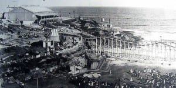

It was 120 years ago today that the original Bondi Aquarium was destroyed by a fire.
The Bondi Aquarium was a seaside attraction that opened in 1887 in the area described as Fletcher’s Glen. This area is what we now know as Tamarama. When the Bondi Aquarium opened, it attracted so many visitors that the tram line was extended to the end of Fletcher street to cope with the crowds.
The Aquarium provided entertainment such as merry-go-rounds, a Punch and Judy show, a shooting gallery, bowling, roller skating and tanks filled with various marine life including seals and a penguin. Dancing, fireworks and concerts were also regularly staged there.
On the 11th of July 1891, the Aquarium was destroyed by a fire, but only weeks later, it was re-built and continued to entertain Sydneysiders.
Here is a photo of the re-built aquarium. Photography by Henry King. Tyrrell Collection, Powerhouse Museum, Sydney.

The Bondi Aquarium shortly after it was re-built, circa 1891
In 1906 William Anderson bought the Bondi Aquarium and transformed this seaside attraction into Wonderland City, which, at the time, was apparently the largest open-air amusement park in the Southern Hemisphere. With a rollercoaster, an airship and thousands of coloured lights decorating the area, it must have been a pretty awesome attraction for its day. We’re talking 1906 remember!
But the popularity of Wonderland City apparently didn’t last for long. Residents objected to animal cruelty and there was growing concern that the airship was becoming a safety risk. There was also ongoing conflict between local swimmers and William Anderson regarding Anderson restricting access to the beach. The publicity of these incidents fuelled a drop in visitor attendance and in 1911, Wonderland City closed.
You can read more about Wonderland City here.
The NSW Government bought the area in 1920 and established Tamarama Park. The street in Tamarama, Wonderland Avenue, was obviously named after Wonderland City.
Here are “then and now” images showing a similar perspective of the site that Wonderland City occupied. The historical image was photographed by Henry King. Tyrrell Collection, Powerhouse Museum, Sydney. You can faintly see the top of the dome of the Aquarium in the top left hand corner of the picture below.

Wonderland City, Tamarama. circa 1907.

Tamarama Beach as seen from Wolaroi Crescent, July 2011.
I’d be interested to hear your thoughts on these seaside attractions that featured in the Bondi area over 100 years ago. Maybe you had a family member that had passed on their memories or stories about attending the Bondi Aquarium or Wonderland City? If so, please do share with us here.
]]>